• Buka situs commons.wikimedia.org
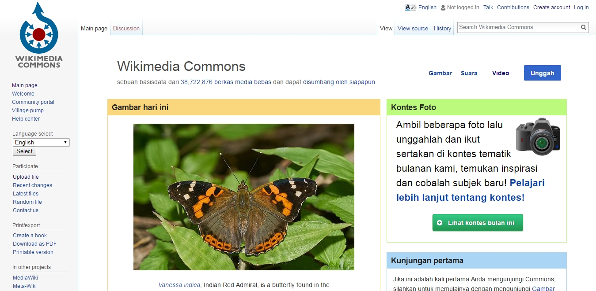• Pada bagian kanan atas situs, Anda akan menemukan tautan berjudul “Create Account”.
• Klik tautan tersebut untuk mendaftarkan diri sebagai pengguna Wikimedia Commons.

• Isi keterangan-keterangan yang dibutuhkan oleh Wikimedia Commons untuk membuat akun pengguna Anda.
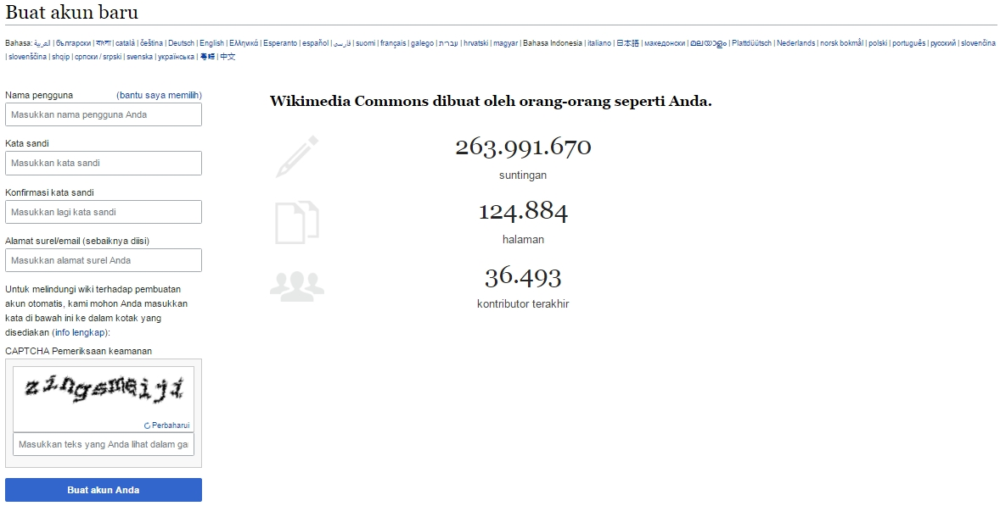• Anda sudah terdaftar sebagai pengguna Wikimedia Commons.
• Selanjutnya, Anda dapat mengklik laman pengguna Anda (lihat tanda merah) untuk mengisi laman tersebut.
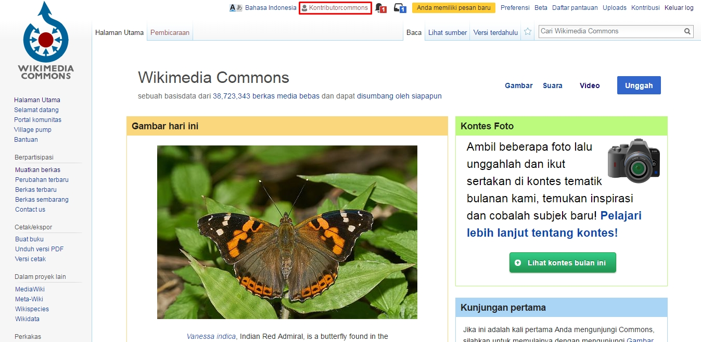• Klik buat untuk mulai melengkapi laman pengguna Anda.
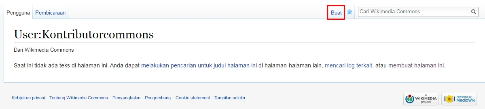 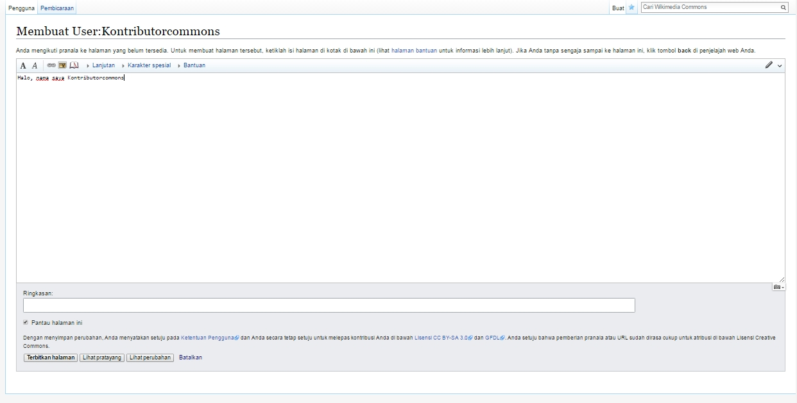• Setelah selesai mengisi informasi untuk laman pengguna Anda, klik “Terbitkan halaman” untuk menyimpan informasi tersebut.
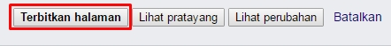• Halaman pengguna Wikimedia Commons Anda sudah jadi.
• Klik “Muatkan berkas” untuk mulai berkontribusi.
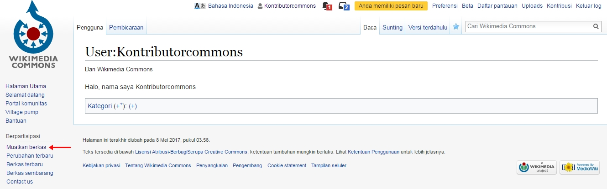• Anda akan dihadaptkan pada laman tentang tata tertib mengunggah berkas di Wikimedia Commons
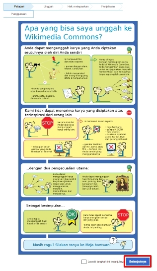• Pada laman “Unggah” Anda dapat mulai memilih berkas yang hendak Anda muat ke Wikimedia Commons
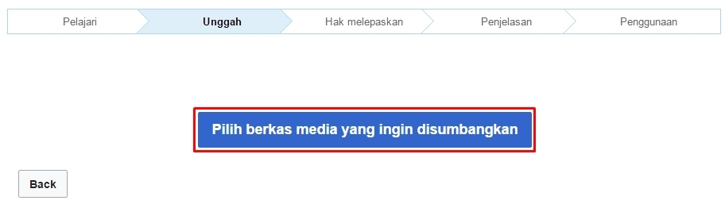• Ketika berkas sudah berhasil dimuat, Anda dapat memilih “Tambahkan berkas lain” jika Anda masih memiliki berkas lain yang hendak dimuatkan.

• Atau langsung klik “Lanjutkan” jika Anda hanya mengunggah satu berkas saja.
• Pilih “Berkas ini adalah karya saya” untuk melanjutkan pengunggahan berkas yang merupakan karya ciptaan Anda sendiri.
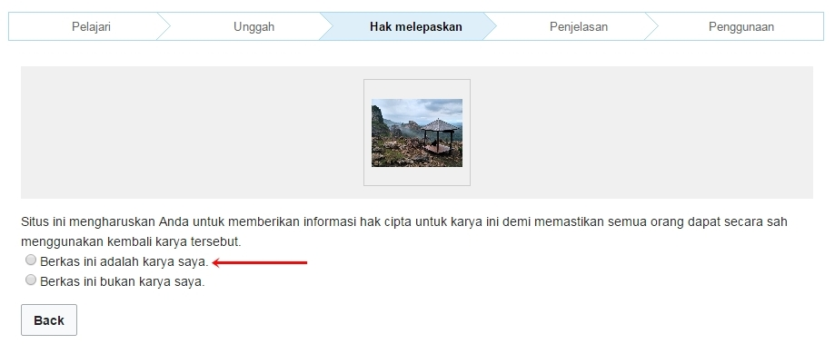• Setelah menyatakan bahwa berkas yang Anda unggah adalah berkas ciptaan Anda sendiri, Commons akan memberikan informasi terkait beberapa hak yang Anda lepaskan ketika Anda mengkontribusikan karya ke Wikimedia Commons.

• Karya yang Anda kontribusikan di Wikimedia Commons akan menerapakan lisensi Creative Commons Atribusi BerbagiSerupa 4.0 yang artinya:
Pengguna ciptaan diperbolehkan untuk:
- Berbagi: Menyalin dan menyebarluaskan ciptaan.
- Adaptasi: Mengubah, menggubah, dan membuat ciptaan turunan dari suatu ciptaan, termasuk penggunaan untuk kepentingan komersial.
Dengan ketentuan:
- Atribusi: mencatumkan nama yang sesuai, mencantumkan tautan terhadap lisensi, dan menunjukan perubahan yang dibuat.
- BerbagiSerupa: Apabila Pengguna menggubah, mengubah, atau membuat ciptaan turunan dari suatu ciptaan, Anda harus menyebarluaskan kontribusi Anda di bawah lisensi yang sama dengan materi asli.
• Setelah itu, Anda akan dibawa ke laman “Penjelasan” untuk melengkapi informasi terkait berkas yang diunggah.
• Informasi yang harus dilengkapi antara lain adalah:
- Judul berkas
- Deskripsi berkas
- Tanggal pembuatan berkas
- Kategori
• Berkas Anda berhasil diunggah ke Wikimedia Commons!
• Mari kunjungi laman Berkas Anda dengan mengklik judul berkas berwarna biru yang berad di bawah “thumbnail” berkas yang Anda unggah
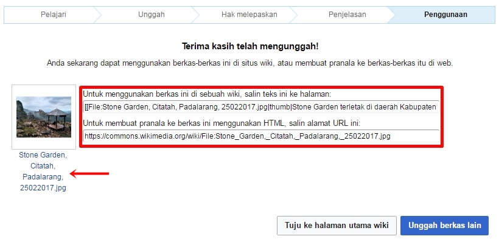• Ini adalah laman berkas yang Anda unggah di Wikimedia Commons.
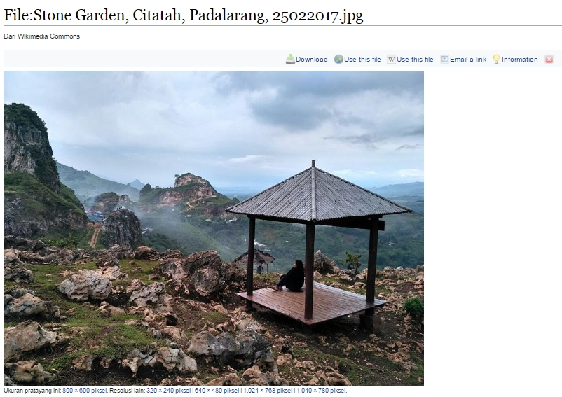• Informasi yang terpampang di bagian ini adalah judul berkas Anda serta pilihan ukuran yang dapat diakses oleh para pengguna berkas di Wikimedia Commons.
• Selain itu laman ini juga menampilkan “Ringkasan” yang menyajikan informasi seperti Deskripsi, Tanggal Pembuatan, Sumber Karya, dan Nama Anda sebagai pencipta karya.
• Setelah itu laman ini menampilkan jenis dan ketentuan penggunaan dari lisensi yang Anda terapkan pada berkas yang Anda unggah.
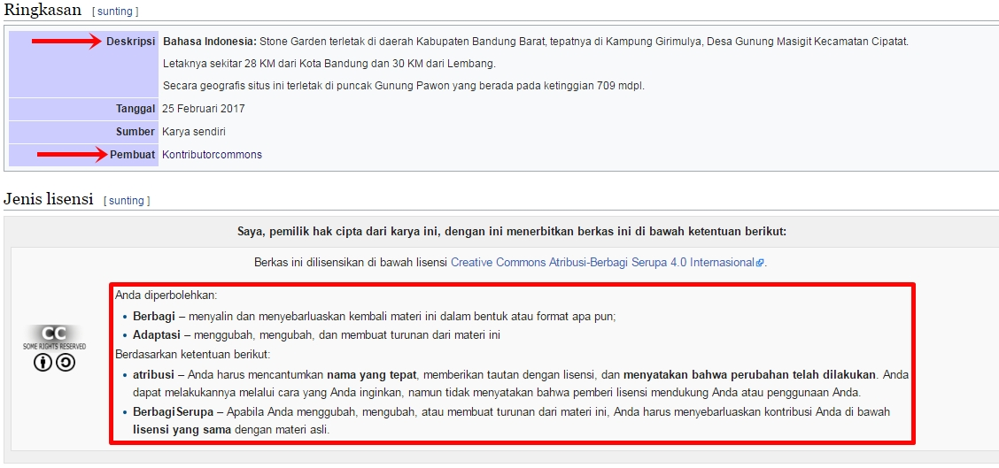• Bagian selanjutnya adalah informasi “Riwayat berkas” yang merupakan rekam jejak setiap perubahan yang terjadi pada berkas yang diunggah.
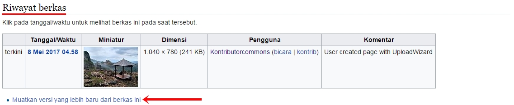• Misalnya ada pengguna lain yang memuatkan versi yang lebih baru dari berkas tersebut, maka versi tersebut akan tetap tercatat di laman ini.
• Fitur ini menjadi salah satu fitur pendukung semangat berkolaborasi di antara pengguna Wikimedia Commons.
• Bagian ini menampilkan “Metadata” dari berkas yang Anda unggah seperti Orientasi, Resolusi horizontal dan vertika, serta perangkat penggambilan gambar yang Anda gunakan.
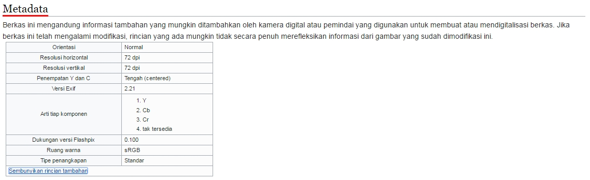• Kategorisasi adalah salah satu fitur yang paling penting di Wikimedia Commons.
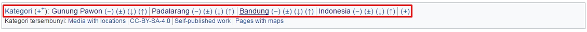• Dengan membuat kategorisasi yang rapih pada tiap berkas yang Anda unggah di Wikimedia Commons, Anda telah membantu membuat perpustakaan berkas digital yang rapih di Wikimedia Commons yang dapat memudahkan pencarian setiap berkas di Wikimedia Commons.
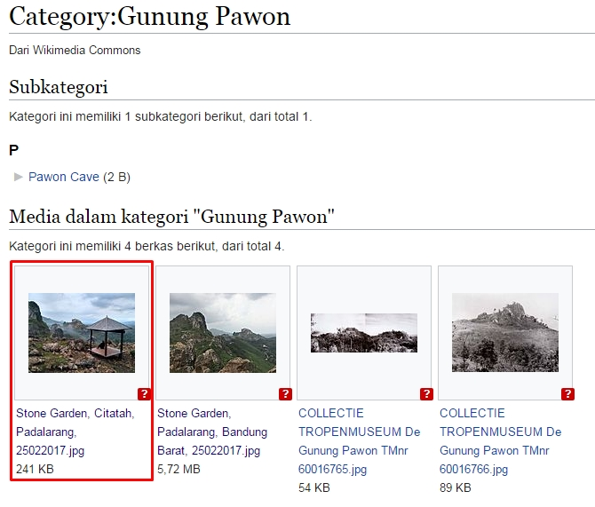• Mengkontribusikan foto kamu secara terbuka di platform seperti Wikimedia Commons, memungkinkan publikasi yang luas terhadap karya Anda, seperti yang bisa kita lihat pada contoh di atas yaitu karya milik pengguna Rachmat04 yang digunakan kembali dalam pemberitaan tentang keturunan Yahudi di Indonesia oleh CNN Indonesia.
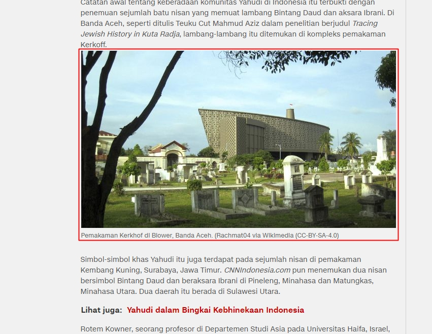Sumber: http://www.cnnindonesia.com/nasional/20160802221031-20-148780/kronik-kehidupan-yahudi-di-indonesia/
• Atau foto karya Crisco1492 yang digunakan kembali oleh Teaforia.
Sumber: https://teforia.com/blog/teas-of-indonesia/